Proprietary to General Electric
Direction 5181166-800, Rev# 7
BrightSpeed Select Service Methods Adv
Proprietary to General Electric |
| Last Revised on: | April 21, 2005 |
This is a new feature that was designed by CT Manufacturing to increase productivity during the DAS Integration phase of gantry staging. The tool allows the user to analyze DASTOOLS test sequences in a graphical format. This tool does not have the capability to analyze patient or raw data. The tool is HTML based and launches in a standalone browser window. Functionally, the tool parses the results of the individual DASTOOL tests, creates many smaller history files with the qif extension, and displays the results in a graphical format for the user.
Three colors are used to represent the quality of the data relative to specification.
| COLOR | MEANING |
| Red | Outside of test specification limits. |
| Yellow | 50% of specification limit versus mean. (Spec = +/- 1.0, Mean = 0.0, Yellow = +/- 0.5) |
| Green | Less than 50% of specification limit versus mean as defined for yellow. |
The tool also operates as follows:
All box plot data is normalized to specification limits, (+/- 1.0) plus or minus one maximum.
Boxplot data points are presented at the Converter Card level.
All default or no data elements are green.
This means that the architecture maps will show a “Green” status even if the element is not used in that specific test.
Occasionally the browser window will hang before the tool can fully initialize. This is a known issue within Netscape.
Work-around: Simply click on the QIF Visualization button in DASTOOLS again. The software will kill the hung process and restart the QIF Browser.
For service, this tool presents a unique opportunity to baseline your systems. The QIF Visualization tool allows the user to quickly review the performance of the DAS/Detector subsystem, provided the FE has performed and analyzed DASTOOLS with a properly working, Customer Satisfied and Accepted, system. Periodic execution and analysis of DASTOOLS can be proactive.
Illustration 1: Error Screen
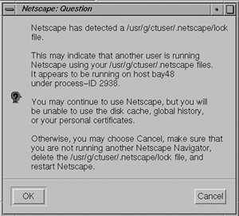
Illustration 1 shows an error screen, seen at QIF launch. Simply click OK to proceed.
Illustration 2: License Screen

Illustration 2 shows a license screen. Simply click accept to proceed.
Illustration 3: Top Level Screen
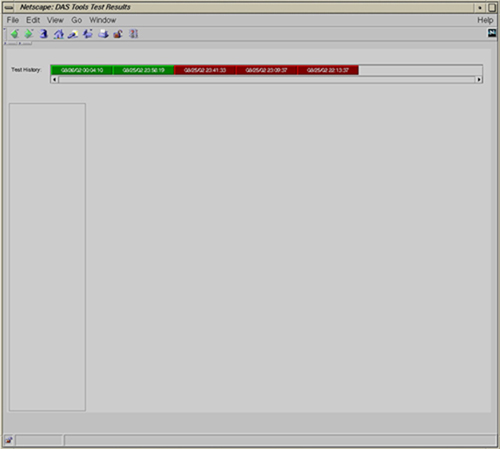
Once the QIF tool launches successfully the screen in Illustration 3 will be displayed. The basic functional features of this screen are as follows:
Test History. This frame of the window will contain the full history retained on the system. The user simply needs to click on one of the time-date stamped history files to view the DASTOOLS tests performed.
Illustration 4: DASTOOLS Auto Test CTQ Screen
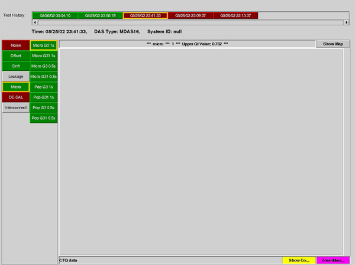
Illustration 4 displays a listing of the tests performed in DASTOOLS.
Test History is identified with a time/date stamp for each test grouping selected by the user.
Each history will be presented in either RED (failed) or GREEN (passed).
Green have “passed” by definition, but may contain marginal (yellow) results.
The left hand navigation column is the CTQ test list. Its behavior is as follows:
All valid tests with results exceeding specification limits will be presented in RED.
All other valid tests will present in a “green” status. These tests have “passed” by definition, but may contain marginal (yellow) results.
Any tests that are not valid appear gray.
Illustration 5: Microphonics Box plot Screen
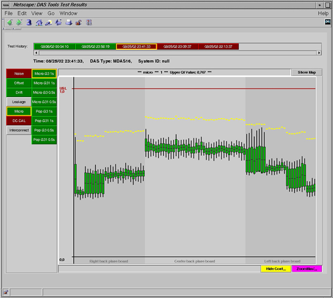
Illustration 5 shows the response of the selected CTQ test buttons framed in yellow.
Note the text frame above the data plot frame reflects:
CTQ tests selected, Upper QI Value, Lower QI Value
QI = Quality Indicator, Value = max or min for the entire data set.
Each of the Converter data channels are normalized to specification limits, +/- 1.0 maximum.
No lower spec limit is shown when zero is the low limit, as in this case.
The normalization effectively auto scales the Converter-to-Converter relationships.
Chassis boundaries are also clearly visible and labeled.
At this point the user can click on any of three buttons:
Grey, <SHOW MAP>
Changes data window to display Architecture Maps.
Yellow, <SHOW/HIDE CONT...>
Toggle function of the data window yellow control indicators, 50 percent data value.
Default condition is Hide.
Purple, <ZOOM MAX/...>
Toggle function of one step zoom or normal.
Default is Normal
Illustration 6: Interconnect Test Box plot Scan 1
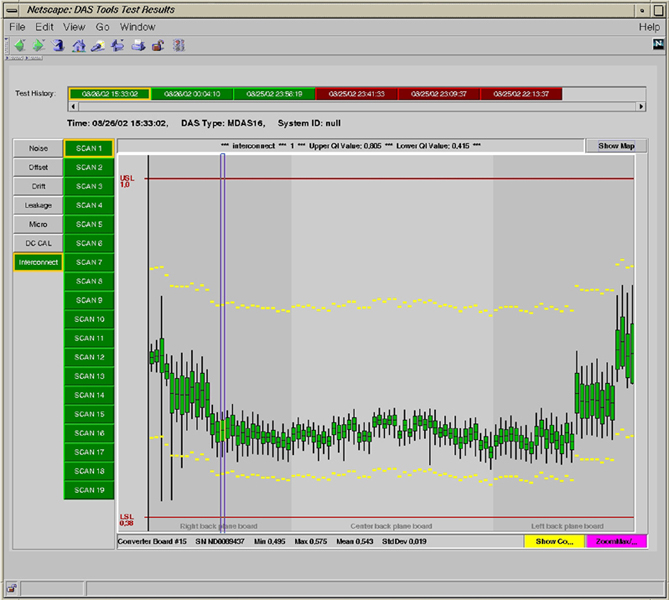
Illustration 6, note the blue box cursor. It is positioned over a specific Converter Board. The following information is displayed in the text frame below the data plot frame.
Converter board number,
Converter board serial number,
Min value,
Max value,
Mean value, and
Standard deviation value.
When the user hovers the cursor over a specific Converter box plot element, a data window appears. This window provides detailed information on the selected data point. This window will disappear after a short period of time.
Illustration 7: Interconnect Test Box plot Scan 3
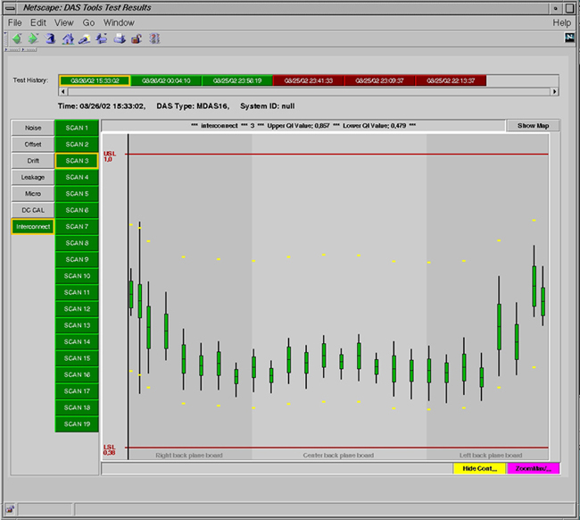
Illustration 7 illustrates a poorly understood fact: Different scan modes, specifically 4 x X mm, do not use all of the DAS hardware. This is important to understand for two reasons,
When troubleshooting Image Artifacts, the scan data must be analyzed using Scan Analysis. This is the only way to conclusively identify the “potential faulty hardware”. The QIF Visualization tool can help to verify faulty hardware. It should NOT be used as a standalone tool for Image Artifact troubleshooting.
As stated above, the hardware architecture maps will show a “GREEN” status even if that data path is not used. This is by design. In the LightSpeed 4.X architecture, data collection modes exist that use only a portion of the 128 channels of a converter card. Thus, if no data or “in spec” data is reported for a convertor card, it will show as GREEN.
Table 1: QIF Interconnect CTQ Cross Reference
| SCAN DATA | FET DATA CHNLS | FET MODE | FET Z-CHNL | FET MODE |
|---|---|---|---|---|
| SCAN 1 | 16 x 0.625 mm | 53 | 16 x 0.625 Z-MODE | 39 |
| SCAN 2 | 16 x 1.25 mm | 54 | 16 x 1.25 Z-MODE | 49 |
| SCAN 3 | 4 x 3.75 mm | 7 | 4 x 3.75 Z-MODE | 38 |
| SCAN 4 | 8 x 1.25 mm | 0 | 8 x 1.25 Z-MODE | 39 |
| SCAN 5 | 8 x 2.50 mm | 1 | 8 x 2.50 Z-MODE | 49 |
| SCAN 6 | 8 x 0.625 mm | 3 | 8 x 0.625 Z-MODE | 1 |
| SCAN 7 | CAL 1 | 4 | Z-SLOPE-CAL 1 | 4 |
| SCAN 8 | CAL 2 | 40 | Z-SLOPE-CAL 2 | 40 |
| SCAN 9 | CAL 3 | 41 | Z-SLOPE-CAL 3 | 41 |
| SCAN 10 | CAL 4 | 42 | Z-SLOPE-CAL 4 | 42 |
| SCAN 11 | CAL 5 | 43 | Z-SLOPE-CAL 5 | 43 |
| SCAN 12 | CAL 6 | 44 | Z-SLOPE-CAL 6 | 44 |
| SCAN 13 | CAL 7 | 45 | Z-SLOPE-CAL 7 | 45 |
| SCAN 14 | CAL 8 | 46 | Z-SLOPE-CAL 8 | 46 |
| SCAN 15 | CAL 9 | 47 | Z-SLOPE-CAL 9 | 47 |
| SCAN 16 | CAL 10 | 48 | Z-SLOPE-CAL 10 | 48 |
| SCAN 17 | CAL 11 | 49 | Z-SLOPE-CAL 11 | 49 |
| SCAN 18 | CAL 12 | 50 | Z-SLOPE-CAL 12 | 50 |
| SCAN 19 | TRK3 | 39 | TRK3 | 39 |
Box plot data is a simple representation of data distribution. The standard definition is a quartile distribution, meaning the data is represented in four parts. The length of each quartile is determined solely by the data distribution. Note, each quartile can be of different length. Why? Because 0% to 25% is the first group of data collected. 25% to 50% is the second group of data collected. 50% to 75% is the third group of data collected. And 75% to 100% is the last group of data collected.
Using this representation in QIF Visualization, two additional elements must be considered. Limit specifications and converter card box plot relationships.
The data graph shows the individual converter card response as compared to the limit specifications. In other words, how close to the limits and how tightly grouped is the data.
The data graph also shows the converter-to-converter relationship. In other words does a converter card have similar response as compared to it’s neighbors?
As seen in the previous pages, it is desirable to have a tightly group distribution that has very similar response from converter-to-converter. This means a linear response across the DAS with a small standard deviation.
Illustration 5 might have an artifact issue since the right backplane has a marked lower microphonics response than the rest of the DAS. The true test of failure is if Image Quality is affected. Do not replace parts to make the plots look good.
Illustration 8: DCCAL BOXPLOT Ratio Screen
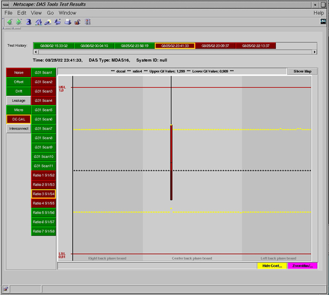
Illustration 8 is displaying a gross failure of the DCCAL test.
This is a ratio of two scan files. The resultant linearity failure can easily be seen and is color coded RED.
Illustration 9: DAS Backplane Architecture Map
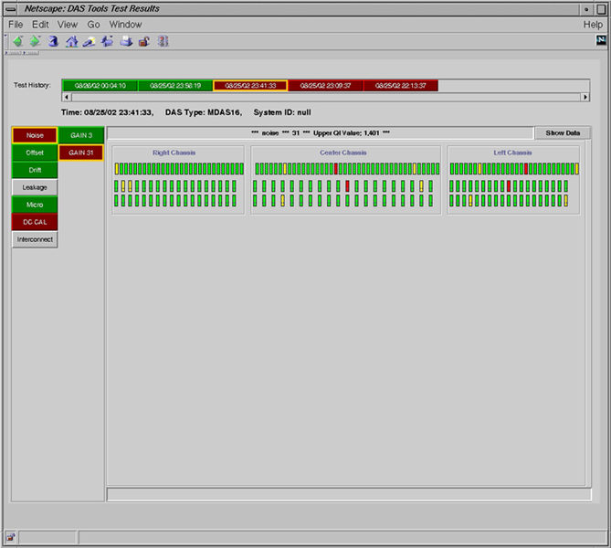
Illustration 9 shows the top level screen when the user clicks on the [SHOW MAP] button from the box plot screen. Note that the [SHOW MAP] button is now [SHOW DATA] . Clicking this button will return the user to the box plot data screen.
The text frames above and below the architecture map frame function the same as in the box plot screens.
The Architecture Map presents the DAS Backplane layouts as seen with the DAS at the 12 o’clock position viewed from the front side of the gantry.
The user can now click on either a converter card slot or a DDIF element. The selected point will turn blue and the appropriate hardware map will be displayed.
Illustration 10: Converter Architecture Map, Converter Board 40
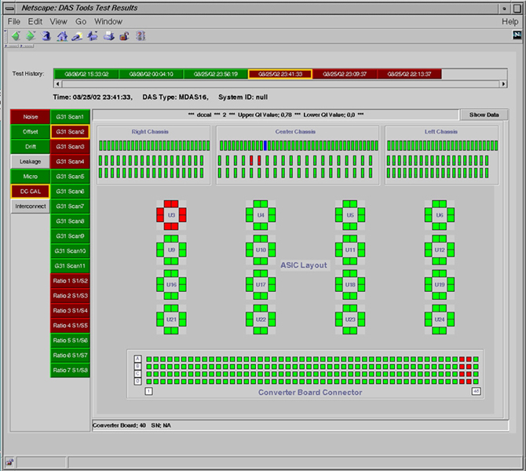
Illustration 10 shows the Converter Board Connector which receives data from the DDIF. The Converter Board contains a number of ASIC’s. Each ASIC shows the signal inputs that correspond to a Converter Board Connector pin. In Illustration 10, the RED Converter Board Connector pins (A46, A47, B46, B47, C46, C47, D46, D47) correspond to ASIC U3 on Converter Board # 40.
In this example, a pattern is clearly visible, however, insufficient evidence exists to determine a proper course of action. The user will need to examine each of the failed CTQ tests. This will show that Converter board 40 is the common element between each failed test.
While a preponderance of evidence seemingly supports the replacement of Converter board 40, The DDIF could still be the root cause. Further analysis is required.
Illustration 11: DDIF Architecture Map Module 23
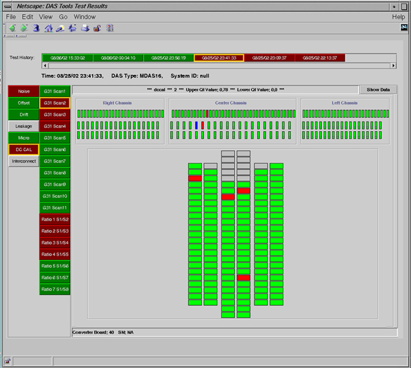
Illustration 11 shows the same CTQ test failure as discussed in the converter board architecture map. The signal mapping is illustrated from the DDIF perspective.
Key items to note:
Gray rectangles are the FET Control lines, Detector Bias Voltage, and Ground Pins.
They are not checked during DASTOOLS testing, and are assumed to be operating correctly.
The remaining rectangles are the data lines coming from the detector and going to the converter card slots. These will be Green, Yellow, or Red.
For detailed information of the DDIF, see MDAS 16 Backplanes Theory, MDAS/GDAS 16 Detector Flex Pinouts, MDAS/GDAS 16 - DAS Detector Interface (DDIF), MDAS/GDAS 16 DDIF Tools, MDAS/GDAS 16 DDIF Cleaning Procedure, and DAS-16 Interposer Replacement.
Analysis of this failure shows no common pattern visible to indicate a DDIF fault: however, it is still insufficient information to conclude Converter Board # 40 is at Fault. Another DDIF needs to be reviewed.
Illustration 12: DDIF Architecture Map Module 24
Illustration 12 shows the second DDIF analysis. Again no specific pattern is visible. Module 23 and 24 show the identical pin location failures. Although this is a pattern, the evidence supports Converter Board # 40 as the root cause.
The DCCAL test failure shown and discussed in Illustration 8 through Illustration 12 identified converter board number 40. This board was replaced for a non-linear ASIC.
The following screens storyboard the analysis process for another failure.
Illustration 13: Noise Box plot
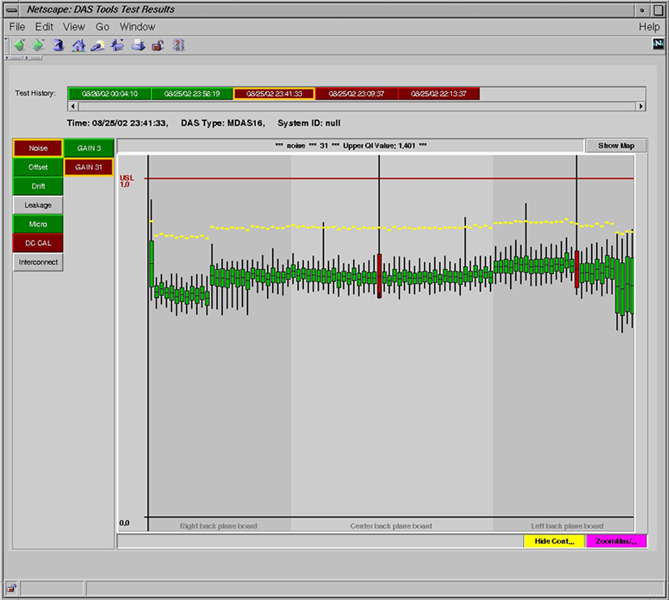
Illustration 14: Noise Architecture Map
Illustration 15: Noise Converter Hardware Map
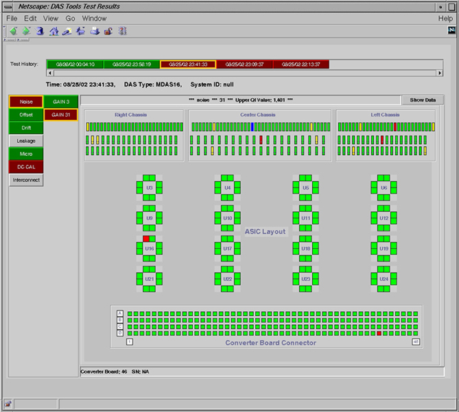
Illustration 16: Noise DDIF Hardware Map
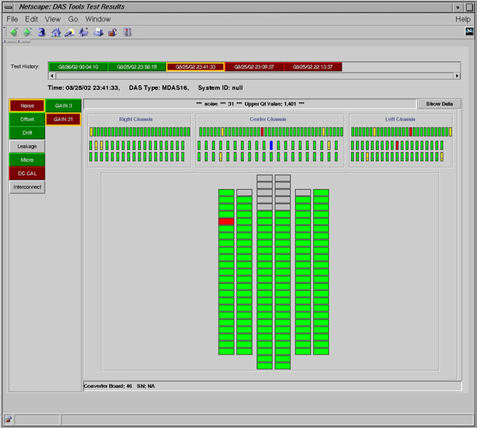
Illustration 13 through Illustration 16 are a sampling of multiple failure and marginal results. Looking at the box plot results it can be seen that two converter boards failed with several converters in marginal status. Illustration 14, converter architecture map, shows a random distribution of data points. Reviewing the converter hardware maps show no distinct patterns, many single point failures as in Illustration 15. The DDIF hardware maps show the same single point and random distributions as the converter hardware maps.
Resolution:
Re-seated failed converter boards. Retest still displays random marginal results; different failed converter board slots.
Performed DAS De-Ionizing procedure. Retest results show no failed or marginal data points.
For this type of scenario, it is recommended that the failed CTQ test be re-run in manual mode.
If results from the second test are different than the first, then a static charge build-up exists. De-Ionizing is recommended.
Duplicate data points indicate possible hardware failure. Re-seat or relocate converter boards as necessary.
Verify cabling connections and covers are properly secured.
Verify DAS power supply, and cooling functionality before replacing any parts.